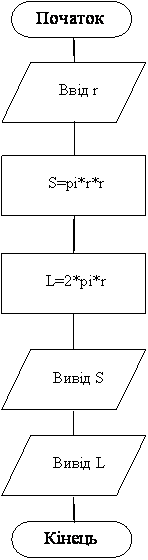

Ќазад
¬перед
«м≥ст
«адач≥ на оформленн€ вводу-виводу з д≥йсними числами
ѕриклад 1
—клад≥ть програму обчисленн€ периметру пр€мокутника P=(a+b)*2. ≈кран, повинен мати вигл€д:
¬вед≥ть ≥сходн≥ дан≥:
ƒовжина (см) Ц> 2.5
Ўирина (см) Ц> 3.5
ѕериметр = 12.00 см.
ƒано: довжина та ширина пр€мокутника.
«найти: периметр пр€мокутника
«м≥нн≥:
¬х≥дн≥:
¬их≥дн≥:
«а умовою вх≥дн≥ д≥н≥ д≥йсного типу, тому тип зм≥нноњ p теж д≥йсний.
јлгоритм
- ¬в≥д вх≥дних даних a, b. ѕеред вводом виводитьс€ по€сненн€, що потр≥бно вводити;
- ќбчисленн€ значенн€ p;
- ¬ив≥д обчисленого значенн€ p. ѕеред виводом значенн€ виводитьс€ по€сненн€, що виводитьс€. «наченн€ виводитьс€ з двома знаками п≥сл€ крапки.
ѕрограма
Var a,b,P:real;
Begin
writeln(' ¬вед≥ть ≥сходн≥ дан≥:');
write('ƒовжина (см) Ц> ');read(a);
write('Ўирина (см) Ц> ');read(b);
P:=(a+b)*2;
Writeln('ѕериметр = ',P:1:2,' см.');
end.
|
ѕриклад 2
—клад≥ть програму обчисленн€ площ≥ кола (S=pi*r2 ) та довжини окружност≥ (L=2*Pi*r ). ≈кран, повинен мати вигл€д:
¬вед≥ть ≥сходн≥ дан≥:
–ад≥ус (см) Ц> 3
S=28.27 кв. см.
L=18.85 см.
ƒано: рад≥ус кола.
«найти: довжину окружност≥ та площу кола
«м≥нн≥:
¬х≥дн≥:
¬их≥дн≥:
- L Ц довжина окружност≥4
- S Ц площа кола
«а умовою рад≥ус r д≥йсного типу, у вираз≥ буде використатис€ функц≥€ Pi, що маЇ д≥йсний тип, тому тип зм≥нних S, L теж д≥йсний.
јлгоритм
- ¬в≥д рад≥усу r. ѕеред вводом виводитьс€ по€сненн€, що потр≥бно вводити;
- ќбчисленн€ значенн€ S;
- ќбчисленн€ значенн€ L;
- ¬ив≥д обчисленого значенн€ S. ѕеред виводом значенн€ виводитьс€ по€сненн€, що виводитьс€. «наченн€ виводитьс€ з двома знаками п≥сл€ крапки.
- ¬ив≥д обчисленого значенн€ L. ѕеред виводом значенн€ виводитьс€ по€сненн€, що виводитьс€. «наченн€ виводитьс€ з двома знаками п≥сл€ крапки.
Ѕлок-схема програми
ожен блок в≥дпов≥даЇ певному оператору. Ѕлоки виконуютьс€ в напр€му л≥н≥й.

ѕрограма
Var r,S,L:real;
Begin
writeln(' ¬ведите исходные данные ');
write(' –адиус основани€ (см) -> ');read(r);
S:=pi*sqr(r); L:=2*pi*r;
Writeln(' S=',S:1:2,' кв. см.');
Writeln(' L=',L:1:2,' см.');
end.
|
Ѕлок-схема програми
ожен блок в≥дпов≥даЇ певному оператору. Ѕлоки виконуютьс€ в напр€му л≥н≥й.
¬ар≥анти задач
- —клад≥ть програму обчисленн€ площ≥ поверхн≥ куба( S=6*a2). ≈кран, повинен мати вигл€д:
¬вед≥ть ≥сходн≥ дан≥:
–ебро (см) Ц> 2.5
ѕлоща поверхност≥: 37.50 кв. см.
- —клад≥ть програму обчисленн€ площ≥ пр€мокутника (S=a*b ). ≈кран, повинен мати вигл€д:
¬вед≥ть ≥сходн≥ дан≥:
ƒовжина (см) Ц> 9
Ўирина (см) Ц> 7.5
ѕлоща пр€мокутника: 67.50 кв. см.
- —клад≥ть програму обчисленн€ обТЇму паралелеп≥педу (V=a*b*c ). ≈кран, повинен мати вигл€д:V
¬вед≥ть ≥сходн≥ дан≥:
ƒовжина (см) Ц> 9
Ўирина (см) Ц> 7.5
¬исота (см) Ц> 5
ќбТЇм паралелепипеду: 337.50 куб. см.
- —клад≥ть програму обчисленн€ площ≥ поверхн≥ паралелеп≥педу (S=2*(a*b+b*c+a*c )).
¬вед≥ть ≥сходн≥ дан≥:
ƒовжина (см) Ц> 9
Ўирина (см) Ц> 7.5
¬исота (см) Ц> 5
ѕлоща поверхност≥: 300.00 кв. см.
- —клад≥ть програму обчисленн€ обТЇму куба( V=a3). ≈кран, повинен мати вигл€д:
¬вед≥ть ≥сходн≥ дан≥:
–ебро (см) Ц> 9.5
ќбТЇм куба: 857.38 куб. см.
- —клад≥ть програму обчисленн€ вартост≥ покупки, що складаЇтьс€ з дек≥лькох зошит≥в та ол≥вц≥в. ≈кран, повинен мати вигл€д:
¬вед≥ть ≥сходн≥ дан≥:
¬арт≥сть зошита (руб) Ц> 2.75
≥льк≥сть зошит≥в Ц> 5
¬арт≥сть ол≥вц€ (руб) Ц> 0.85
≥льк≥сть ол≥вц≥в Ц> 2
¬арт≥сть покупки: 15.45 руб.
- —клад≥ть програму обчисленн€ вартост≥ покупки, що складаЇтьс€ з дек≥лькох зошит≥в та обкладинок до них. ≈кран, повинен мати вигл€д:
¬вед≥ть ≥сходн≥ дан≥:
¬арт≥сть зошита (руб.) Ц> 2.75
¬арт≥сть обкладинки (руб.) Ц> 0.5
≥льк≥сть комплект≥в (шт.) Ц> 7
¬арт≥сть покупки: 22.75 руб.
- —клад≥ть програму обчисленн€ вартост≥ де€коњ к≥лькост≥ €блук. ≈кран, повинен мати вигл€д:
¬вед≥ть ≥сходн≥ дан≥:
¬арт≥сть 1 кг €блук (руб.) Ц> 8.5
¬ага €блок (кг) Ц> 2.3
¬арт≥сть покупки: 19.55 руб.
- —клад≥ть програму обчисленн€ площ≥ трикутника, €кщо в≥дома довжина основи та висота ( S=0.5*a*h). ≈кран, повинен мати вигл€д:
¬вед≥ть ≥сходн≥ дан≥:
ќснова (см) Ц> 8.5
¬исота (см) Ц> 10
ѕлоща трикутника: 42.50 кв. см.
- —клад≥ть програму обчисленн€ опору електричного кола, що складаЇтьс€ з двох опор≥в, €к≥ зТЇднан≥ посл≥довно (r=r1+r2). ≈кран, повинен мати вигл€д:
¬вед≥ть ≥сходн≥ дан≥:
ѕерший оп≥р (ќм) Ц> 15
ƒруг≥й оп≥р (ќм) Ц> 27.3
ќп≥р кола: 42.30 ќм.
- —клад≥ть програму обчисленн€ опору електричного кола, що складаЇтьс€ з двох опор≥в, €к≥ зТЇднан≥ паралельно (r=(r1*r2)/(r1+r2)). ≈кран, повинен мати вигл€д:
¬вед≥ть ≥сходн≥ дан≥:
ѕерший оп≥р (ќм) Ц> 15
ƒруг≥й оп≥р (ќм) Ц> 20
ќп≥р кола: 8.57 ќм.
- —клад≥ть програму обчисленн€ сили струму в електричному кол≥ (I=U/R) . ≈кран, повинен мати вигл€д:
¬вед≥ть ≥сходн≥ дан≥:
Ќапруга (вольт) Ц> 36
ќп≥р (ќм) Ц> 1500
—ила струму: 0.024 јмпер.
- —клад≥ть програму переводу в≥дстан≥ з верст у к≥лометри (1 верста Ц 1066,8 м). ≈кран, повинен мати вигл€д:
¬вед≥ть ≥сходн≥ дан≥:
¬≥дстань у верстах Ц> 100
100 верст Ц 106.68 км
- —клад≥ть програму переводу ваги з фунт≥в у к≥лограми (1 фунт Ц 409,5 г). ≈кран, повинен мати вигл€д:
¬вед≥ть вагу у фунтах Ц> 5
5 фунтов Ц 2.05 кг
- —клад≥ть програму обчисленн€ площ≥ поверхн≥ цил≥ндру S=2*pi*r2+2*pi*r*h. ≈кран, повинен мати вигл€д:
¬вед≥ть ≥сходн≥ дан≥:
–ад≥ус основи (см) Ц> 5.5
¬исота (см) Ц> 7
ѕлоща поверхн≥ цилиндра 431.97 кв. см.
- —клад≥ть програму обчисленн€ в≥дстан≥ м≥ж населеними пунктами по карт≥. ≈кран, повинен мати вигл€д:
¬вед≥ть ≥сходн≥ дан≥:
ћасштаб карти (к≥льк≥сть к≥лометр≥в в 1 см) Ц> 120
¬≥дстань м≥ж населенними пунктами по карт≥ (см) Ц> 3.5
¬≥дстань м≥ж населенними пунктами: 420.00 км.
Ќазад
¬перед
«м≥ст